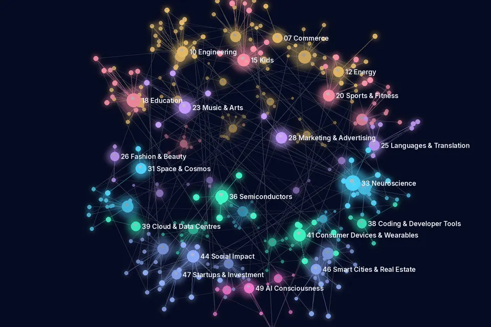

Journal of the AI Universe ✦ Research Papers Today
Research Papers Today
28 November 2026 · 770 new AI research papers in 48 of the 50 categories · Curated by Dr.P.R.K.Varma
638 peer-reviewed papers and 132 preprints, compiled automatically from medRxiv, bioRxiv, PubMed, Crossref, OpenAlex, preprint servers via Crossref (Research Square, Preprints.org, SSRN and others), europepmc, s2. Each line gives the title (linked), authors, venue, date, evidence label and identifier. Abstracts and figures are not reproduced: open the paper to read it. A listing is not an endorsement, and preprints have not been peer-reviewed. Health papers are not medical advice.
Research map in 3D
28 November 2026: the top 289 papers in 48 categories as a 3D network. Large points are categories, small points are papers (brighter = peer-reviewed), and faint lines join papers in different categories that share a topic word in their titles. Drag to rotate, pinch or use + and − to zoom, and tap a paper to open the original. Titles and links only.

Papers per category (48 categories)
01–14 Industries & Sectors 293 papers
01 AI Filmmaking
2 papers · 2 peer-reviewedProject page →- Multimodal Audio-Visual Speech Recognition in the Era of Large Language Models: A Comprehensive Review, Challenges, and Future ProspectsYi-Bo He, K. Seng, L. Ang et al.Cognitive Computation · · Peer-reviewed · DOI 10.1007/s12559-026-10682-8
- AI-Driven Automation in Visual Effects Production: Evaluating the Accuracy of Rotoscoping, Matchmoving, and Clean Plate Generation in Production ShotsSheldon Mark Jarrett, Christy Alice, Ramesh T. et al.International Scientific Journal of Engineering and Management · · Peer-reviewed · DOI 10.55041/isjem08776
02 AI Agriculture
18 papers · 18 peer-reviewedProject page →- Application of Visible/near-Infrared Spectroscopy and Hyperspectral Imaging with Machine Learning for High-Throughput Phenotyping of Pesticide and Herbicide Stressed PlantsZhang Q, Zhai Y, Zhou L et al.Critical reviews in analytical chemistry · · Peer-reviewed · DOI 10.1080/10408347.2026.2757659 · PMID 43102040
- MultiModelTrans: a deep learning model for crop classification integrating multi-source time-series remote sensing featuresMiao He, Pengao Li, Xie Yong et al.International Journal of Digital Earth · · Peer-reviewed · DOI 10.1080/17538947.2026.2768606 · Open access
- Contactless lameness detection based on pose estimation in dairy cows using a lightweight 1D-CNN architectureKerim Kürşat Çevik, Emre Dandıl, Mustafa Boğa et al.BMC Veterinary Research · · Peer-reviewed · DOI 10.1186/s12917-026-06102-6 · Open access
- Detecting subclinical mastitis in dairy cattle by using machine learning techniques to analyse automated milking system dataFraga MM, Brassolatti LC, Soarde MLDS et al.The Veterinary record · · Peer-reviewed · DOI 10.1002/vetr.71376 · PMID 43102837
- Deep learning in fruit detection: A review and comparative analysisCossio-Montefinale L, Ruiz-Del-Solar J, Verschae REngineering Applications of Artificial Intelligence · · Peer-reviewed · DOI 10.1016/j.engappai.2026.116761
- Plant Disease Detection and Intelligent Agricultural Advisory SystemLikhith P., M. J. Tejas Gowda, Pradeep Patel P. K. et al.International Journal of Innovative Science and Research Technology (IJISRT) · · Peer-reviewed · DOI 10.38124/ijisrt/26nov1153 · Open access
- A Pre-Standardization Multimodal ICT Framework for Agricultural Field-Note Visualization Using CLIP and AI SketchingHui Li, Yu ChenJournal of ICT Standardization · · Peer-reviewed · DOI 10.13052/jicts2245-800x.1444 · Open access
- A Comparative Study of Machine Learning Algorithms for Paddy Variety Classification Using Digital Image ProcessingJagadesh Krishna, Praveen. B. S, Thatchayeni. EInternational Journal of Research and Innovation in Social Science · · Peer-reviewed · DOI 10.47772/ijriss.2026.101100326
- WheatTrust-DG: A Foundation Model-Enhanced Domain Generalization Framework for Trustworthy Wheat Spike Detection and Counting in Unseen Agricultural EnvironmentsYu Sun, Yihang Qin, Haoran Sun et al.Sensors · · Peer-reviewed · DOI 10.3390/s26237491 · Open access
- Driving mechanisms of the spatiotemporal heterogeneity of soil carbon-to-nitrogen ratio in subtropical hilly regions: the interplay between natural pedological context and anthropogenic managementZheng M, Guo X, Huang J et al.Frontiers in plant science · · Peer-reviewed · DOI 10.3389/fpls.2026.1967956 · PMID 43100786 · Open access
03 AI Defence
2 papers · 1 peer-reviewed · 1 preprintProject page →- Research on Target Recognition Based on Planar Integrated Structure Optical Diffraction Neural NetworkHaidong Xu, Ping Xu, Tuo Yang et al.Sensors · · Peer-reviewed · DOI 10.3390/s26237488 · Open access
- Weaponized Forgetting: Erasure Requests as an Attack Surface on the Safety Memory of LLM AgentsAmeur Y, Mokhtari B, Mendes MP et al.Preprints.org · · Preprint · DOI 10.20944/preprints202611.2860.v1 · Open access
04 AI Healthcare
193 papers · 176 peer-reviewed · 17 preprintsProject page →Research listing only, not medical advice.
- Artificial intelligence-assisted semi-automated personal health data curation and reuse for myocardial infarctionLiang W, van Mierlo R, Bynens AL et al.European heart journal. Digital health · · Peer-reviewed · DOI 10.1093/ehjdh/ztag176 · PMID 43101117 · Open access
- AI-integrated versus Standard Mammography Screening Pathways: A Systematic Review and Network Meta-Analysis of Diagnostic AccuracyWang TW, Yang S, Wang YC et al.Radiology. Imaging cancer · · Peer-reviewed · DOI 10.1148/rycan.260297 · PMID 43102378
- The accuracy-safety trade-off of large reasoning models in clinical diagnosticsWu S, Chen L, Fu Y et al.Nature communications · · Peer-reviewed · DOI 10.1038/s41467-026-78520-x · PMID 43099011
- Post-TIPS prediction via multimodal interaction: A multi-center dataset and framework for survival, complication, and portal pressure assessmentDong J, Liu D, Ding R et al.Medical image analysis · · Peer-reviewed · DOI 10.1016/j.media.2026.104396 · PMID 43097999
- Safety and accuracy diverge across deployment conditions in clinical large language modelsWind S, Nguyen TT, Sopa J et al.npj Digital Medicine · · Peer-reviewed · DOI 10.1038/s41746-026-03455-y · Open access
- UK AI breast cancer screening trialKirby TThe Lancet Oncology · · Peer-reviewed · DOI 10.1016/s1470-2045(26)00661-3 · PMID 43098166
- A spatial peroxisomal switch of AGPS drives ether lipid-induced ferroptosis in vascular calcificationLi Q, Zhang C, Liu Y et al.Science advances · · Peer-reviewed · DOI 10.1126/sciadv.aeh3708 · PMID 43102948
- Language model-assisted label refinement for accurate sepsis detection from electronic health recordsKitsos Kalyvianakis I, Perez de Amezaga C, Lee E S et al.medRxiv (Infectious Diseases) · · Preprint · DOI 10.64898/2026.09.08.26362428 · Open access
- CardioSynx: A Pilot Study of a Low-Latency AI-Assisted Phonocardiography System with concurrent Processing for Real-Time Valvular Heart Disease DiagnosisMansoor M, Waris A, Khan MJ et al.IEEE journal of biomedical and health informatics · · Peer-reviewed · DOI 10.1109/jbhi.2026.3758129 · PMID 43102861 · Open access
- Head-to-head comparison of multimodal models incorporating clinical, imaging, and epicardial adipose tissue radiomics for predicting the 3-year MACEs in patients with stable anginaGuo R, Zuo P, Zhou H et al.International journal of cardiology · · Peer-reviewed · DOI 10.1016/j.ijcard.2026.135091 · PMID 43098484
05 AI Finance
14 papers · 10 peer-reviewed · 4 preprintsProject page →Research listing only, not financial advice.
- Likelihood based deep learning for volatility forecasting using Vietnam stock market dataQuang Phung Duy, Huyen Nguyen Khanh, Quyền Hoàng Nam et al.Discover Artificial Intelligence · · Peer-reviewed · DOI 10.1007/s44163-026-02837-1
- Financial innovation in oil price volatility assessment: an AI-integrated fuzzy decision frameworkM. Shahbaz, H. Di̇nçer, S. YükselFinancial Innovation · · Peer-reviewed · DOI 10.1186/s40854-026-00960-7
- When Algorithms Meet Shariah: Mapping the Knowledge Landscape of Artificial Intelligence in Islamic FinanceS. M. Riha Parvin, Sabeena Ameer, Sajida Begam et al.Journal of Economic Surveys · · Peer-reviewed · DOI 10.1111/joes.70193 · Open access
- Artificial Intelligence Pilot Zones and Corporate Financing Frictions: Signaling and Liquidity ChannelsLu C, Zhang XFinance Research Letters · · Peer-reviewed · DOI 10.1016/j.frl.2026.111152
- Dynamic enterprise cash flow risk prediction and simulation based decision support via financial theory constrained graph learning and uncertainty aware reinforcement learningYuan Wu, Zi-Wei LiDiscover Artificial Intelligence · · Peer-reviewed · DOI 10.1007/s44163-026-02645-7
- Machine Learning-Enabled Financial Risk Prediction: a Hybrid Approach Integrating Technical Indicators and Behavioral AnalyticsRumpa Roy, S. Rathod, J. Chitranshi et al.SN Computer Science · · Peer-reviewed · DOI 10.1007/s42979-026-05499-z
- AI for economics and the economics of AIZhi-Gang FengDigital Economy and Sustainable Development · · Peer-reviewed · DOI 10.1007/s44265-026-00096-7
- Designing a Product Recommender System Using Generative Artificial Intelligence to Enhance Decision-Making in Trading Companiesامیررضا رجبی, Amirreza Rajabiمدیریت پویا و تحلیل کسب و کار. · · Peer-reviewed · OpenAlex W7240137589 · Open access
- AN ENHANCED MACHINE LEARNING FRAMEWORK FOR ACCURATE MEDICARE FRAUD DETECTIONManal Mohammed Afzal Muhammed PashaInternational Journal of Data Science and IoT Management System · · Peer-reviewed · OpenAlex W7240109720 · Open access
- Auditing information leakage and predictive signal in financial machine learning: a controlled studyOrtiz-Gárces I, Mera-Navarrete A, Sarango-Lalangui P et al.Frontiers in artificial intelligence · · Peer-reviewed · DOI 10.3389/frai.2026.1962585 · PMID 43101282 · Open access
06 AI Law & Investigation
6 papers · 5 peer-reviewed · 1 preprintProject page →Research listing only, not legal advice.
- Safeguarding Voice Actors From AI Displacement: The Case of the German “AI Collective Agreement”Grażyna ZboralskaDigital Age in Semiotics & Communication · · Peer-reviewed · DOI 10.33919/dasc.26.9.10 · Open access
- ISSUES OF COPYRIGHT AND INTELLECTUAL PROPERTY OWNERSHIP IN RELATION TO CONTENT CREATED BY ARTIFICIAL INTELLIGENCEAhmadjonov Shohruhbek Rustamjon ogli Rahimova Nargiza KhamidullaevnaHSR (London) · · Peer-reviewed · OpenAlex W7240121827 · Open access
- AI-Driven Technologies in Law: Trends, Opportunities, and RisksДрапезо Роман Григорьевич, T. I. Gritskevich, V. Y. DrapezoBulletin of Kemerovo State University Series Humanities and Social Sciences · · Peer-reviewed · DOI 10.21603/2542-1840-2026-10-4-764-778 · Open access
- Digital Forensic Analysis of the DeepSeek Application for AndroidRicardo Santos, Miguel Frade, Patrício Domingues et al.Forensic Sciences · · Peer-reviewed · DOI 10.3390/forensicsci6040109 · Open access
- LLMs can better capture human judgments—with the right promptsDanica Dillion, Chen Cecilia Liu, Baihui Wang et al.Frontiers in Social Psychology · · Peer-reviewed · DOI 10.3389/frsps.2026.1903786 · Open access
- Recognising Foreign Divorces in Turkey: Judicial and Administrative Routes under Turkish Private International Law, Compared with the Brussels II ter RegulationCokgor OSocArXiv · · Preprint · DOI 10.31235/osf.io/86jtx · Open access
07 AI Commerce
3 papers · 1 peer-reviewed · 2 preprintsProject page →- A Comparative Analysis of Data Preprocessing Methods in Business AnalyticsB Divya, Pasha Maheboob, Sarkar Koulik DeInternational Journal of Innovative Research in Engineering · · Peer-reviewed · DOI 10.59256/ijire.20260706019
- Temporal Robustness and Explainability Stability in E-Commerce Customer Repurchase Prediction: A Rolling-Origin Evaluation of Predictive and Customer-Ranking PerformanceAlsheyyab MASocArXiv · · Preprint · DOI 10.31235/osf.io/4r8ks · Open access
- Temporal Dynamics of Metacognitive Experience: A Longitudinal Panel Study of AI Recommendations and Purchase Intentions in the Arab E-Commerce MarketWagdi O, Aly SM, Zowied NEN et al.Preprints.org · · Preprint · DOI 10.20944/preprints202611.2957.v1 · Open access
08 AI Journalism
4 papers · 4 peer-reviewedProject page →- “Responsible AI,” Integrity, and the Foundations of Journalistic TrustGondwe GDigital Journalism · · Peer-reviewed · DOI 10.1080/21670811.2026.2767016
- Exploring journalists experiences, perceptions, and challenges in the age of newsroom automation and artificial intelligenceMohammad Sudirman Mohd Tahir, Shahrul Nazmi Sannusi, Sabariah Mohamed SallehInternational Communication Gazette · · Peer-reviewed · DOI 10.1177/17480485261505674
- THE ROLE AND ETHICAL BOUNDARIES OF GENERATIVE ARTIFICIAL INTELLIGENCE AND SYNTHETIC MEDIA TOOLS IN CREATING MODERN TRAVEL JOURNALISM CONTENTNozima RaximjonovaInternational Bulletin of Applied Sciences and Technology · · Peer-reviewed · DOI 10.5281/zenodo.24521395 · Open access
- Fact or Fiction? Fake News Detection with Metadata Fusion and Transformer ModelsFurkan GözJUCS - Journal of Universal Computer Science · · Peer-reviewed · DOI 10.3897/jucs.167630 · Open access
09 AI Architecture
2 papers · 2 peer-reviewedProject page →- BIM-based spatial semantic reasoning and component localization in the operation and maintenance phase driven by Heterogeneous Graph Neural NetworksZhang W, Wang Z, Yang Z et al.Advanced Engineering Informatics · · Peer-reviewed · DOI 10.1016/j.aei.2026.105486
- AI-driven architectural design: Prompt grammar for text-to-image representationChiara Mommi, Fabio Bianconi, Marco FilippucciDesign Studies · · Peer-reviewed · DOI 10.1016/j.destud.2026.101442 · Open access
10 AI Engineering
9 papers · 8 peer-reviewed · 1 preprintProject page →- Metamaterial Absorbers Based on Deep Learning Inverse Design and MXene InkJing Z, Wu Z, Xing YACS applied materials & interfaces · · Peer-reviewed · DOI 10.1021/acsami.6c18010 · PMID 43100168
- Adaptive Physics-Informed Randomized Neural Networks with a Partition of Unity for Solving PDEsRan Bi, Wei-Bing DengJournal of Scientific Computing · · Peer-reviewed · DOI 10.1007/s10915-026-03519-x
- A five-subnetwork physics-informed neural network based on HSDT for bending and free vibration analysis of FGM platesLin-Xin Peng, Yuan-Yan Xie, He-Tao Lv et al.Archive of applied mechanics (1991) · · Peer-reviewed · DOI 10.1007/s00419-026-03214-1
- Development of physics-informed trajectory-constrained deep learning soft sensor for intelligent feeding in docosahexaenoic acid productionChen ZL, Zhang TS, Fan H et al.Bioresource technology · · Peer-reviewed · DOI 10.1016/j.biortech.2026.136360 · PMID 43098215
- Amplitude-Dependent Accuracy of Fourier-Feature Physics-Informed Neural Networks for a Conservative Nonlinear OscillatorYan JiangEngineering and Technology Journal · · Peer-reviewed · DOI 10.47191/etj/v11i11.15 · Open access
- PRISM: a physics-informed spatiotemporal convolutional network for interaction localisation in continuous annular nanocomposite PET scintillatorsAbraham R, Chahine D, Safavi-Naeini M et al.Physics in medicine and biology · · Peer-reviewed · DOI 10.1088/1361-6560/aec75a · PMID 43097728
- Uncertainty-Calibrated Fault Diagnosis with XAI-Grounded LLM Explanationsİlkay Yelmen, Metin Zontul, Halit Bakır et al.Sensors · · Peer-reviewed · DOI 10.3390/s26237478 · Open access
- A Controlled Evaluation of a Chebyshev-Coefficient Physics-Informed Neural Network for the Allen–Cahn EquationZhuldyz Issa, Nauryzbay Adil, Zh. A. Abdiramanov et al.Symmetry · · Peer-reviewed · DOI 10.3390/sym18121983 · Open access
- Advancing Circular and Sustainable Surface Engineering through Machine Learning-Assisted Plasma Electrolytic Polishing of TC4 Alloy: Reusability, Stirring and Immersion PropertiesÇebi A, Demirtaş H, Bolat Ç et al.Research Square · · Preprint · DOI 10.21203/rs.3.rs-11590729/v1 · Open access
11 AI Robotics
17 papers · 9 peer-reviewed · 8 preprintsProject page →- Reinforcement Learning-Optimized Neural Fast Terminal Sliding Mode Control for Fault-Tolerant Trajectory Tracking of Robot ManipulatorsFatemeh Vasfi Lahijan, Mostafa AbediIranian Journal of Science and Technology Transactions of Electrical Engineering · · Peer-reviewed · DOI 10.1007/s40998-026-01304-y
- Continuous Spatiotemporal Perception Through Multilayer Hierarchically Heterogeneous InterfaceWang Z, Du Y, Wang ZL et al.Small (Weinheim an der Bergstrasse, Germany) · · Peer-reviewed · DOI 10.1002/smll.76936 · PMID 43100197
- Hierarchical disjunctive graph deep reinforcement learning for integrated scheduling and inventory management of a flexible robotic cell with central bufferWang D, Zou J, Zhou X et al.Robotics and Computer-Integrated Manufacturing · · Peer-reviewed · DOI 10.1016/j.rcim.2026.103470
- Enhancing training-time geometric supervision for self-supervised monocular depth estimation from UAV imageryYang X, Fukuda TISPRS Journal of Photogrammetry and Remote Sensing · · Peer-reviewed · DOI 10.1016/j.isprsjprs.2026.11.036 · Open access
- Embodied AI in Unstructured 3D Spaces: Fusing Midrange and Long-Range Sensing for Instruction-Aware Construction RoboticsMahdi Bonyani, Maryam Soleymani, Chao WangJournal of Computing in Civil Engineering · · Peer-reviewed · DOI 10.1061/jccee5.cpeng-7639
- Geometric Deep Learning Methods Based on Differential Geometry, Lie Groups, and Manifold Optimization for Physical Intelligence and Robotic Manipulation ProblemsEliz KarabulutHuman computer interaction. · · Peer-reviewed · DOI 10.62802/jhci.198
- HospNav: failure-aware open-vocabulary hospital service robot navigation in annotated mapsWeifan Zhang, Yunxi Tang, Yun-Hui Liu et al.Robot learning. · · Peer-reviewed · DOI 10.55092/rl20260028
- Beyond personalisation: governed durable adaptation for trustworthy embodied AI companionsCarlene Campbell, Donique RoddFrontiers in Robotics and AI · · Peer-reviewed · DOI 10.3389/frobt.2026.2006209 · Open access
- Beyond semi-aura: embodied authenticity and algorithmic missingness in AI reproduction of vernacular typefacesLv J, Wang YFrontiers in psychology · · Peer-reviewed · DOI 10.3389/fpsyg.2026.1988687 · PMID 43100816 · Open access
- AGROS: An Integrated Multimodal AI Framework for Autonomous Navigation, Robotic Manipulation, and Intelligent Task AutomationManikanta G, Kumar P, Pandey AK et al.ChemRxiv · · Preprint · DOI 10.26434/chemrxiv.15012903/v1 · Open access
12 AI Energy
8 papers · 6 peer-reviewed · 2 preprintsProject page →- Physics-motivated lag-aware reinforcement learning with neural surrogate acceleration for liquid-cooled battery thermal managementYansen Zhang, Weikuo Zhang, Wenjun KongApplied Thermal Engineering · · Peer-reviewed · DOI 10.1016/j.applthermaleng.2026.134167
- Transfer Learning with Graph Neural Networks for Experimental Prediction of Organic Photovoltaic EfficiencyBan H, Lee J, Seo H et al.ACS omega · · Peer-reviewed · DOI 10.1021/acsomega.6c06164 · PMID 43101291 · Open access
- A influência da inteligência artificial na indústria elétrica: uma revisão bibliográficaLuiz Henrique de Oliveira Rocha, Layse Oliveira Batista, Glaucivan Barroso da CunhaRevista fisio&terapia. · · Peer-reviewed · DOI 10.69849/g9rz2188 · Open access
- A novel hybrid CNN–transformer for efficient photovoltaic panel defect detection and classificationThenkaraimuthu Mariprasath, Geetha Anbazhagan, S. Preethi et al.Measurement and Control · · Peer-reviewed · DOI 10.1177/00202940261512224 · Open access
- Fate of hydrogen sulphide on refractory oxide nanoparticles <i>via</i> foundation model-accelerated atomistic modelling and <i>in situ</i> spectroscopyMates-Torres E, Mino L, Escolano-Casado G et al.Nanoscale · · Peer-reviewed · DOI 10.1039/d6nr02993k · PMID 42986167 · Open access
- SVR and KNN Optimizationfor Transformer Oil Breakdown Voltage PredictionGiovanni Dimas PrenataE-JOURNAL TEKNIK ELEKTRO DAN KOMPUTER · · Peer-reviewed · DOI 10.35793/v6xe2y41 · Open access
- Photovoltaic power forecasting using Bayesian optimized hybrid decomposition and a convolutional TransformerQi C, He H, Xue YResearch Square · · Preprint · DOI 10.21203/rs.3.rs-11572606/v1 · Open access
- Buying or Generating? Predictors of Renewable Energy Pathways in European SMEs: An Explainable Machine Learning AnalysisChukwu VC, Obialo S, Onyia J et al.Preprints.org · · Preprint · DOI 10.20944/preprints202611.2785.v1 · Open access
13 AI Transportation
9 papers · 9 peer-reviewedProject page →- A Swin transformer-based real-time traffic sign recognition framework with multi-vehicle camera height validation and an integrated voice alert systemBubryur Kim, Kathiresan Kandasamy, Sri Preethaa K R et al.Scientific Reports · · Peer-reviewed · DOI 10.1038/s41598-026-79813-3 · Open access
- GREAT: A graph edge attention network for the electric vehicle routing problem with asymmetric costsLischka A, Rydin F, Wu J et al.Transportation Research Part C: Emerging Technologies · · Peer-reviewed · DOI 10.1016/j.trc.2026.106184 · Open access
- Transformer-based traffic crash injury severity classification with integrated structured and unstructured data: Interpretation of classification-related factors using SHAP and attention mechanismsPark H, Roh C, Hu J et al.Accident; analysis and prevention · · Peer-reviewed · DOI 10.1016/j.aap.2026.108903 · PMID 43098073
- A Large Language Model-Driven Framework for Automated Reward Discovery in Electric Vehicle Fleet Scheduling for Grid-Integrated Energy SystemsChu X, Tu M, Shi T et al.IEEE Transactions on Smart Grid · · Peer-reviewed · DOI 10.1109/tsg.2026.3757966
- PortAgent: Large Language Model-Driven Vehicle Dispatching Agent for Port TerminalsHu J, Li J, Lin W et al.IEEE Transactions on Intelligent Transportation Systems · · Peer-reviewed · DOI 10.1109/tits.2026.3740627
- From segmentation to networks: Mask R-CNN and graph analysis uncover vessel–parenchyma organisation in angiosperm xylemNodoka Izumi, I. Wright, S. Chhajed et al.Trees · · Peer-reviewed · DOI 10.1007/s00468-026-02838-8
- Voxel R-CNN 3D detection algorithm analysis for intelligent drivingNing YuDiscover Artificial Intelligence · · Peer-reviewed · DOI 10.1007/s44163-026-02755-2
- YOLO Nano-Based Vehicle Detection for Monitoring Traffic DensityEko Prasetyo, Agus Subhan Akbar, Adiananda Adiananda et al.JEECS (Journal of Electrical Engineering and Computer Sciences) · · Peer-reviewed · DOI 10.54732/jeecs.v11i2.10 · Open access
- A user profile and network traffic analyser in an intelligent system for early detection of computer attacks in transportationV. М. Alekseev, Л. А. Баранов, S. N. ChichkovDependability · · Peer-reviewed · DOI 10.21683/1729-2646-2026-26-4-60-68 · Open access
14 AI Manufacturing
6 papers · 6 peer-reviewedProject page →- Development of a Deep Learning-Powered Automated System for Accurate Defect Detection and Measurement in Laser-cladding Coated MaterialsSenthilvel Chinnasamy, Sivakumar Sattanathan, Sathish SathyavageeswaranJournal of Vibration Engineering & Technologies · · Peer-reviewed · DOI 10.1007/s42417-026-02834-9
- An end-to-end pipeline for cermaic tiles defect detection and classification: highlighting on explainable Al, CNN-ViT ensemble and UNet/UNet++ segmentationMM Rahman, Md. Mehedi Hasan Moon, Muntasir Hossain Azmi et al.Neural Computing and Applications · · Peer-reviewed · DOI 10.1007/s00521-026-12622-x
- Explainable Artificial Intelligence for Intelligent Food Inspection Systems: Transitioning from Predictive Accuracy to Industrial Trust (A Systematic Review)Shima Omidi, Zahra RanjbarinasabFood Analytical Methods · · Peer-reviewed · DOI 10.1007/s12161-026-03370-8
- The Industrial Readiness for Adoption of Artificial Intelligence in Small and Medium EnterprisesMd. Fajle Rabbi, Md. Nazmul HowladerJournal of the Knowledge Economy · · Peer-reviewed · DOI 10.1007/s13132-026-03503-8
- Research on Trusted Perception and Flexible Interaction Interface Design Optimization of Industrial Internet of Things Based on Federated LearningWan ChenJournal of ICT Standardization · · Peer-reviewed · DOI 10.13052/jicts2245-800x.1446 · Open access
- AI-Based Automated PCB Defect Detection and Sorting Using Edge Machine VisionSudha L K, R B Vishwanatha Reddy, Karthik R et al.IJIREEICE · · Peer-reviewed · DOI 10.17148/ijireeice.2026.141130 · Open access
15–20 People & Life Stages 90 papers
15 AI Kids
9 papers · 8 peer-reviewed · 1 preprintProject page →- A conversational VR paradigm for studying peer exclusion and inclusion in children and adolescentsKhau T, De Luca G, Benvenuti M et al.Virtual Reality · · Peer-reviewed · DOI 10.1007/s10055-026-01553-6 · Open access
- Artificial intelligence in early childhood education: exploring educator sentiments, practices and concerns through social media discussionsHolly Tootell, Kelly Bittner, Jo Bird et al.AI, Brain and Child · · Peer-reviewed · DOI 10.1007/s44436-026-00048-0
- A pre-procedural machine learning model to predict hypoxemia risk in pediatric flexible bronchoscopyChi W, Liu J, Li Y et al.Annals of medicine · · Peer-reviewed · DOI 10.1080/07853890.2026.2760066 · PMID 43099922
- Self-powered Smart Band for Neonatal Safety Monitoring by a Rare Earth Ion-Enhanced Triboelectric SensorXiong J, Chui Z, Luo J et al.ACS sensors · · Peer-reviewed · DOI 10.1021/acssensors.6c03879 · PMID 43098658
- Development and validation of a nomogram for predicting successful sedation in pediatric outpatients based on machine learningHai-Yan Xue, Yi-Han Zheng, Chu-Lin LinBMC Pediatrics · · Peer-reviewed · DOI 10.1186/s12887-026-07485-z
- ChatGPT and Claude receive high expert ratings for paediatric tracheostomy guidance but differ in accuracy, completeness and readabilityNashwan AJ, Hendy AEvidence-based nursing · · Peer-reviewed · DOI 10.1136/ebnurs-2026-104698 · PMID 43098708
- Hidden Pitfalls of artificial intelligence in pediatric emergency radiology: a pictorial review of failure modes, clinical implications, and mitigation strategiesShamani-Aminian A, Askari H, Askari A et al.Emergency radiology · · Peer-reviewed · DOI 10.1007/s10140-026-02563-2 · PMID 43099272
- Generation of synthetic data in the prediction of necrotizing enterocolitis in preterm infantsShilpa Muralidhar, Mohan PammiArtificial Intelligence in Health · · Peer-reviewed · DOI 10.36922/aih026290088 · Open access
- Deep learning-based treatment suggestion on periapical radiographs in paediatric dentistry: a comparative evaluation of YOLOv11 and YOLO26Aydoğdu H, Kendigelen B, Selen MB et al.Research Square · · Preprint · DOI 10.21203/rs.3.rs-11664484/v1 · Open access
16 AI Geriatric
9 papers · 9 peer-reviewedProject page →- Intelligent monitoring of human behaviour in dementia care: a non-contact multimodal AIoT approach in real-world elderly supportHao Han, 政治 羽田野Scientific Reports · · Peer-reviewed · DOI 10.1038/s41598-026-59657-7 · Open access
- Development and validation of a machine learning model for early prediction of severe scrub typhus in older patientsHuang L, Tang Y, Liu J et al.Annals of medicine · · Peer-reviewed · DOI 10.1080/07853890.2026.2760032 · PMID 43099892
- Watching through the screen: a secondary reflexive thematic analysis of nurses' experiences of remote AI-enabled monitoring in geriatric careAli SI, Shaban MGeriatric nursing (New York, N.Y.) · · Peer-reviewed · DOI 10.1016/j.gerinurse.2026.104448 · PMID 43097766
- Barriers and Facilitators to a Community-Based Digital Literacy Program for Older Adults: A CFIR-Guided Qualitative Study with AI-Assisted CodingYu Z, Huang C, Chen XS et al.J Gerontol Soc Work · · Peer-reviewed · DOI 10.1080/01634372.2026.2768519 · PMID 43097107
- Wearables and Machine Learning Use for Activity of Daily Life and Fall Management in Older Adults: Systematic ReviewIzabela Pera Calvi, Filipe Andrade Bernardi, Francisco Ferreira et al.JMIR AI · · Peer-reviewed · DOI 10.2196/93640 · Open access
- Explainable Artificial Intelligence for Longitudinal Prediction of Cognitive Decline in Diabetes: A Comprehensive Survey of Methods, Data, and Research ChallengesJitendra Kumar Sonkar, Vishal Kohli, Sachin KumarIconic Research and Engineering Journals · · Peer-reviewed · DOI 10.64388/ire1725631 · Open access
- A Peri-Procedural Interpretable Machine Learning Framework to Predict Contrast-Associated Acute Kidney Injury in Older Patients: Development, Temporal Internal Validation, and Exploratory Transportability AnalysisZhang X, Zhang X, Jin J et al.Reviews in cardiovascular medicine · · Peer-reviewed · DOI 10.31083/rcm52089 · PMID 43101589 · Open access
- A Double-Inertial-Embedded Two-Step Mann-Based ELM with CNN Feature Extraction for Alzheimer’s Disease Classification from MRI ImagesWatcharaporn Cholamjiak, Phatcharaphon Phuangsuwan, Nithi Baiya et al.Symmetry · · Peer-reviewed · DOI 10.3390/sym18121984 · Open access
- Joint trajectories of episodic memory and mobility difficulties in older adults in China and the United States: a longitudinal cohort studyLiu Y, Yin S, Li Y et al.Frontiers in aging neuroscience · · Peer-reviewed · DOI 10.3389/fnagi.2026.2001920 · PMID 43101116 · Open access
17 AI Psychology
33 papers · 28 peer-reviewed · 5 preprintsProject page →Research listing only, not medical advice.
- Risk governance for generative AI mental health support: a multi-turn safety architectureAreias AC, Botelho C, Farinhas A et al.npj Digital Medicine · · Peer-reviewed · DOI 10.1038/s41746-026-03510-8 · Open access
- DEEMO-R1: De-identity Multimodal Emotion Recognition and Reasoning with Reinforcement LearningLi D, Xing B, Liu X et al.IEEE transactions on pattern analysis and machine intelligence · · Peer-reviewed · DOI 10.1109/tpami.2026.3758221 · PMID 43102848
- Automated detection of depression in clinical interviews using pretrained transformer language modelsLongdi Xian, Kit Ying Chan, Jie Chen et al.Scientific Reports · · Peer-reviewed · DOI 10.1038/s41598-026-82723-z · Open access
- Externally Validated Explainable Machine Learning for Identifying High Death Anxiety in Chronic Heart Failure: Multicentre Cross-Sectional StudyMa Y, Zhang X, Shi J et al.Journal of advanced nursing · · Peer-reviewed · DOI 10.1111/jan.70843 · PMID 43102904
- Artificial Intelligence in Digital Depression Care: Current Applications, Challenges, and Future DirectionsWang W, Shen Y, Huang S et al.Brain and behavior · · Peer-reviewed · DOI 10.1002/brb3.71965 · PMID 43099980
- AI Systems Psychology (Part II): Agency Debt as a Measurement Framework for the Erosion of Human Agency under routine AI exposureLlewellyn Ellardus van Zyl, Leon T. De Beer, Robert A. EmmonsThe Journal of Positive Psychology · · Peer-reviewed · DOI 10.1080/17439760.2026.2769784 · Open access
- Machine learning-based identification of allostatic load-related biomarkers for depressive symptoms among US adultsLi C, Wang Q, Pan X et al.Psychoneuroendocrinology · · Peer-reviewed · DOI 10.1016/j.psyneuen.2026.108093 · PMID 43098062
- Development and validation of the digital perceptual-emotional health adaptive scale for AI-based learning (DPEHA-AI) among Jordanian adolescentsKhasawneh YJA, Ayasrah MN, Khasawneh MAS et al.BMC psychology · · Peer-reviewed · DOI 10.1186/s40359-026-05959-4 · PMID 43099745
- When Artificial Intelligence Reads Identity: A Counselling Perspective on Reflective PracticeRahmadani CMB, Putra AHThe clinical teacher · · Peer-reviewed · DOI 10.1111/tct.70564 · PMID 43099966
- Large language model (LLM) & counseling for fetal malformationsGrünebaum A, Chervenak FASeminars in fetal & neonatal medicine · · Peer-reviewed · DOI 10.1016/j.siny.2026.101792 · PMID 43098812
18 AI Education
34 papers · 30 peer-reviewed · 4 preprintsProject page →- Advancing university teachers’ digital competence through AI pedagogy and emerging technologies for sustainable higher education in ParaguayDerlis Cáceres-Troche, M. Gómez-García, Moussa Boumadan HamedDiscover Education · · Peer-reviewed · DOI 10.1007/s44217-026-02441-6
- Situating AI Ethics in Language Education: Toward Justice, Relationality, and PedagogyChaoran Wang, Ben BakerInternational Journal of Applied Linguistics · · Peer-reviewed · DOI 10.1111/ijal.70430 · Open access
- Evaluating the performance of Large Language Models in answering questions from Italian medical e-learning courses and potential ethical concerns: a pilot studyInfante A, Brancasi A, Chiloiro S et al.La Radiologia medica · · Peer-reviewed · DOI 10.1007/s11547-026-02322-w · PMID 43102757
- Understanding students’ academic reading in a mobile-based LLM integrated AR learning environment: Insights on cognitive load, engagement, and prompting behavior from secondary school students in IndiaSunny Prakash Prajapati, Syaamantak DasComputers & Education X Reality · · Peer-reviewed · DOI 10.1016/j.cexr.2026.100192 · Open access
- Beyond technology acceptance: design thinking and teachers’ pedagogical use of generative artificial intelligenceNgoc-Giang Nguyen, T. Ta, Viet-Duong Nguyen et al.Education and Information Technologies : Official Journal of the IFIP technical committee on Education · · Peer-reviewed · DOI 10.1007/s10639-026-14190-y
- Self-perceived AI competency in Ecuadorian higher education: an assessment using the UNESCO frameworkJ. Torres-Díaz, A. Moro, Silvia Eugenia TorresDiscover Artificial Intelligence · · Peer-reviewed · DOI 10.1007/s44163-026-02845-1
- Initiatives, outcomes, benefits, and challenges of integrating artificial intelligence in Ethiopian education: a scoping reviewAnemut Mehari, Seleshi Zeleke Teketel, Tilahun Gidey GebremeskalDiscover Education · · Peer-reviewed · DOI 10.1007/s44217-026-02470-1 · Open access
- Cautious or dependent? The relationship between DHH students' GenAI use behaviours and digital literacy developmentShang J, Wang W, Wang J et al.British Journal of Educational Technology · · Peer-reviewed · DOI 10.1111/bjet.70103
- Generative AI-supported learning in vocational automotive education: effects on learning effectiveness, motivation, and multimodal communication competenceCathy Weng, Kifle Kassaw, Chen Chia-le et al.Interactive Learning Environments · · Peer-reviewed · DOI 10.1080/10494820.2026.2767865
- AVISTA: An extensible desktop platform for reproducible tabular machine learning and deep learning analyticsMd Monzurul Islam, Shriyank Somvanshi, Subasish DasSoftwareX · · Peer-reviewed · DOI 10.1016/j.softx.2026.103258 · Open access
20 AI Sports & Fitness
5 papers · 5 peer-reviewedProject page →- Between sentiment and social meaning: AI-assisted analysis of online sports fan discourseOrr LeventalQualitative Research Reports in Communication · · Peer-reviewed · DOI 10.1080/17459435.2026.2769457
- Decolonizing Sport Psychology Through Artificial Intelligence: Towards an Africa-Centered Framework for Integrating Indigenous Knowledge into Athlete Mental Skills TrainingD.C. OchorRESEARCH JOURNAL OF HUMANITIES AND CULTURAL STUDIES · · Peer-reviewed · DOI 10.56201/rjhcs.v12.no9.2026.pg17.30
- Explainable Multimodal Machine Learning Estimates Weekly Countermovement Jump Readiness in Collegiate Badminton PlayersJian ZJournal of visualized experiments : JoVE · · Peer-reviewed · DOI 10.3791/75519 · PMID 43102266
- An artificial intelligence-based prediction for suitable sport exercise recommendation using BMI and heart rateBoniface Ntambara, Shyaka Vincent, Uwamahoro LeopordFrontiers in Big Data · · Peer-reviewed · DOI 10.3389/fdata.2026.1927346 · Open access
- Application of inertial measurement units and machine learning for fatigue assessment in badminton athletesGong C, Liu M, Tang Y et al.Frontiers in physiology · · Peer-reviewed · DOI 10.3389/fphys.2026.1889980 · PMID 43094560 · Open access
21–29 Culture & Belief 20 papers
22 AI Mythology
1 paper · 1 peer-reviewedProject page →- AI-assisted reconstruction of lost architectural heritage: integrating generative models with archaeological typologyYuting Dai, Wei Hao, Jingru Zhang et al.Scientific Reports · · Peer-reviewed · DOI 10.1038/s41598-026-81544-4 · Open access
23 AI Music & Arts
4 papers · 4 peer-reviewedProject page →- Adaptive Perception and Filtering Decoding for Mural-Sketch-Extraction Diffusion ModelsBin Tian, An Guo, Xiaobin Deng et al.npj Heritage Science · · Peer-reviewed · DOI 10.1038/s40494-026-03067-5 · Open access
- Intelligent classification of oil painting language using cross comparison neural networksYu-Li He, Shi-Qi ZhouDiscover Artificial Intelligence · · Peer-reviewed · DOI 10.1007/s44163-026-02827-3
- TriFusion-Art: a multimodal deep learning framework for affective and art-historical aesthetic perceptionXin-Jie YuDiscover Artificial Intelligence · · Peer-reviewed · DOI 10.1007/s44163-026-02862-0
- Culturally Grounded Generative AI for the Sustainable Preservation and Creative Transformation of Song Brocade: Balancing Cultural Authenticity, Innovation, and Heritage ConservationJing Jin, Rongrong CuiSustainability · · Peer-reviewed · DOI 10.3390/su182312035 · Open access
24 AI Literature
2 papers · 2 peer-reviewedProject page →- Authorship Attribution and Stylometric Analysis of AI-Generated Text: An Evaluation of prvsiyan's Extended Name That LLM DatasetPit PichappanJournal of Data Processing · · Peer-reviewed · DOI 10.6025/jdp/2026/16/4/193-211 · Open access
- Users vs. independent judges: Comparing perceived authorship and ownership in AI-supported collaborative writingJoseph Fung, Kamryn M. Kadotani, Samantha L. McMichael et al.Cyberpsychology Journal of Psychosocial Research on Cyberspace · · Peer-reviewed · DOI 10.5817/cp2026-5-6 · Open access
25 AI Languages & Translation
7 papers · 7 peer-reviewedProject page →- A comparative study of temporal modeling for large-scale Vietnamese isolated sign language recognitionThang Cap, Trân Trần Bảo, Ham Nguyen et al.Discover Computing · · Peer-reviewed · DOI 10.1007/s10791-026-10903-6 · Open access
- Evaluating error risk in Chinese-to-English artificial intelligence translation systemsZhong-Wei Mei, Zhen WangDiscover Artificial Intelligence · · Peer-reviewed · DOI 10.1007/s44163-026-02873-x
- Transpositioning and Ethics Continua in AI Use, Development, and ResearchPablo Rotaeta Pérez, Maria KuteevaInternational Journal of Applied Linguistics · · Peer-reviewed · DOI 10.1111/ijal.70428 · Open access
- The impact of generative artificial intelligence supported project based language learning on EFL speaking proficiency among Chinese undergraduatesJia Gao, Asmaa AlSaqqafDiscover Artificial Intelligence · · Peer-reviewed · DOI 10.1007/s44163-026-02794-9
- Applied linguistics in the era of language generationCarol A. Chapelle, Shuhui YinApplied Linguistics · · Peer-reviewed · DOI 10.1093/applin/amag111 · Open access
- Using encoder-based and generative large language models to facilitate linguistic annotationKristopher Donald Kyle, Hakyung SungApplied Linguistics · · Peer-reviewed · DOI 10.1093/applin/amag112
- A Hybrid Fuzzy Deep Learning Framework for Arabic Part-of-Speech Tagging Using BiLSTM and AraBERTJabar H. YousifArtificial Intelligence & Robotics Development Journal · · Peer-reviewed · DOI 10.52098/airdj.20266496 · Open access
26 AI Fashion & Beauty
2 papers · 2 peer-reviewedProject page →- The Algorithmic Gaze: Beauty Standards and the Objectification of Indian Women in AI-Generated ImagesPriyanka DessaiINTERNATIONAL JOURNAL OF INNOVATIONS & RESEARCH ANALYSIS · · Peer-reviewed · DOI 10.62823/ijira.9732
- Visual monitoring system for shed-opening clarity based on multimodal fusion and spatiotemporal continuity analysisZhang Y, Zhang C, Jia K et al.Textile Research Journal · · Peer-reviewed · DOI 10.1177/00405175261501748
27 AI Travel & Hospitality
1 paper · 1 peer-reviewedProject page →- AI Incorporation of Sentiment Analysis of Customer Reviews in the Hospitality Industry Using Classical and Transformer-Based ModelsMarisa Tania, Shravya KalvaRAIS Journal for Social Sciences · · Peer-reviewed · OpenAlex W7240112728 · Open access
28 AI Marketing & Advertising
1 paper · 1 peer-reviewedProject page →- Digital, AI-enabled marketing and the competitiveness of trade services: a sociological perspective on labor transformation, social inclusion and organizational capacityNavruz-Zoda BN, Tadjiyev BU, Ruziyev OA et al.Frontiers in sociology · · Peer-reviewed · DOI 10.3389/fsoc.2026.1932284 · PMID 43101010 · Open access
29 AI Gaming & Immersive Worlds
2 papers · 1 peer-reviewed · 1 preprintProject page →- Inside the Spine Metaverse: How Immersive Technology, AI, and Digital Twins Are Transforming CareMarteau BL, Tan SQY, Liang Y et al.IEEE pulse · · Peer-reviewed · DOI 10.1109/mpuls.2026.3716805 · PMID 43102843
- UniResAvatar: Multi-Level One-shot Animatable Gaussian Avatars with Adjustable Quality--Cost Trade-offsZhang Z, Zhang W, Lei W et al.Research Square · · Preprint · DOI 10.21203/rs.3.rs-11744592/v1 · Open access
30–35 Science 201 papers
30 AI Research & Innovation
57 papers · 49 peer-reviewed · 8 preprintsProject page →- Graph Stochastic Jump-Diffusion Equation for Uncertainty Estimation on Dynamic GraphsLin X, Zhou Z, Cao Y et al.IEEE transactions on pattern analysis and machine intelligence · · Peer-reviewed · DOI 10.1109/tpami.2026.3758207 · PMID 43102847
- Layer-wise Prediction for Interpretation of Hidden Representations in Deep Neural Networks through Evolving Probability DistributionsLiu Z, Liu Y, Li J et al.Nature communications · · Peer-reviewed · DOI 10.1038/s41467-026-78340-z · PMID 43099005
- A part affordance dataset for semantic segmentation based on diffusion modelXinyan Tan, Weimin Zhang, Fangxing Li et al.Scientific Reports · · Peer-reviewed · DOI 10.1038/s41598-026-81960-6 · Open access
- A Multi-Agent Reinforcement Learning Control Architecture for the Physics-Based Model of an Osseointegrated Transfemoral AmputeePetrillo D, Siciliano R, Sabatelli M et al.IEEE transactions on neural systems and rehabilitation engineering : a publication of the IEEE Engineering in Medicine and Biology Society · · Peer-reviewed · DOI 10.1109/tnsre.2026.3758177 · PMID 43102846 · Open access
- Experimental verification of a monocular CNN-based pose estimation algorithm for the SROC missionAntonio D’Ortona, Lucrezia Lovaglio, Marco Visca et al.CEAS Space Journal · · Peer-reviewed · DOI 10.1007/s12567-026-00790-4 · Open access
- The potential of (Bayesian) statistics to enhance reliability and trust in an age of artificial intelligenceNadja KleinCanadian Journal of Statistics · · Peer-reviewed · DOI 10.1002/cjs.70099 · Open access
- Least fixpoint semantics and canonical rule extraction for recursive monotonic graph neural networksUmar IshtiaqKnowledge-Based Systems · · Peer-reviewed · DOI 10.1016/j.knosys.2026.117382
- Computer Vision and Deep Learning for Player and Ball Tracking in Handball: A Comprehensive Review of Detection, Tracking, Occlusion, and Emerging TechnologiesDarshana Prajapati, Ayaan ShethAugmented Human Research · · Peer-reviewed · DOI 10.1007/s41133-026-00093-7
- From ROC AUC to k-fold cross-validation: questionable practices in machine learning and biostatistics that should be challenged and reassessedDavide Chicco, Giuseppe Jurman, Luca OnetoBioData Mining · · Peer-reviewed · DOI 10.1186/s13040-026-00626-1 · Open access
- ARTIFACT Network: Federated Infrastructures, Collaboration, and Roadmap for AI in Accelerator ScienceA. Ghribi, Sabrina Appel, Erik Bründermann et al.EPJ Research Infrastructures · · Peer-reviewed · DOI 10.1007/s41781-026-00198-z · Open access
31 AI Space & Cosmos
2 papers · 2 peer-reviewedProject page →- Dynamics of Solar Atmospheric Heating: Establishing Causality between Photospheric Flux Cancellation and Chromospheric Responses via Deep Learning and Multi-Instrument ObservationsAbdalla AIThe Astrophysical Journal · · Peer-reviewed · DOI 10.3847/1538-4357/aeb6ee · Open access
- Physics-Guided Residual Learning Network for Satellite-Derived Bathymetry in Heterogeneous Coastal WatersWang J, Zhang G, Xing S et al.Remote Sensing · · Peer-reviewed · DOI 10.3390/rs18234094 · Open access
32 AI Biotechnology
69 papers · 48 peer-reviewed · 21 preprintsProject page →- A long-context generative foundation model for versatile RNA designHuang Y, Lv G, Gao Z et al.Nature Machine Intelligence · · Peer-reviewed · DOI 10.1038/s42256-026-01321-w
- HapAdapter: A Transfer Learning Protocol for DNA Foundation Models Adapted to Diploid Personal EpigenomesRozowsky J, Metrick A, Wang J et al.bioRxiv (Bioinformatics) · · Preprint · DOI 10.64898/2026.11.25.769310 · Open access
- Capturing human expertise for AI-assisted molecular structure annotationGoncalves Nunes W D, Ting J, Patan A et al.bioRxiv (Bioinformatics) · · Preprint · DOI 10.64898/2026.11.25.769360 · Open access
- From phenotypic screening to mechanism: AI-guided discovery of novel chemical scaffolds associated with replication licensing stress in breast cancerBarzowska-Gogola A, Sułek A, Jończyk J et al.Pharmacological research · · Peer-reviewed · DOI 10.1016/j.phrs.2026.109757 · PMID 43098283
- Mono(2-ethylhexyl) phthalate may promote lung adenocarcinoma stromal remodeling through ADARB1-dependent fibroblast activation: Integrated bioinformatic, biophysical and cellular evidenceZhang Y, Zhang D, Wang S et al.Ecotoxicology and environmental safety · · Peer-reviewed · DOI 10.1016/j.ecoenv.2026.121079 · PMID 43098111
- Identification of calcium signaling-associated biomarkers in postmenopausal osteoporosis via multi-omics analysis and experimental validationLu Y, Xie L, Wang N et al.Molecular biology reports · · Peer-reviewed · DOI 10.1007/s11033-026-13216-5 · PMID 43102664
- EvoSeq: A Eukaryotic Sequence-Function Profiling Platform for AI-Guided Engineering of Genome-Editing EnzymesShen J, Sun Y, Han P et al.Advanced science (Weinheim, Baden-Wurttemberg, Germany) · · Peer-reviewed · DOI 10.1002/advs.78685 · PMID 43098935
- An integrative network toxicology and single-cell analysis implicates a potential myeloid-centered plaque remodeling axis in bisphenol A-related atherosclerosisWang Q, Wu J, Qi S et al.Molecular diversity · · Peer-reviewed · DOI 10.1007/s11030-026-11790-1 · PMID 43099228
- Artificial intelligence in DNA repair: from mechanism to medicineWang F, Yang F, Zhang B et al.Experimental & molecular medicine · · Peer-reviewed · DOI 10.1038/s12276-026-01896-9 · PMID 43099147
- Precision Nutrition: Integrating Gut Microbiome, Multi-Omics, Artificial Intelligence and Digital Approaches for Personalized Dietary InterventionsMazumder S, Bhattacharya D, Lahiri D et al.Journal of the American Nutrition Association · · Peer-reviewed · DOI 10.1080/27697061.2026.2757669 · PMID 43099952
33 AI Neuroscience
35 papers · 25 peer-reviewed · 10 preprintsProject page →- Which brain MRI radiomic feature most accurately differentiates UMN-predominant ALS patients with and without CST hyperintensity?Rajagopalan V, Pioro EPJournal of the neurological sciences · · Peer-reviewed · DOI 10.1016/j.jns.2026.126241 · PMID 43097758
- ADNET adaptive dual stream network with hierarchical attention fusion for early stage Alzheimer’s disease detection from brain MRIVivek Gondalia, Kalpesh A. Popat, Disha H. ParekhScientific Reports · · Peer-reviewed · DOI 10.1038/s41598-026-76093-9 · Open access
- Bridging Fidelity and Latency: Conditional Flow Matching with CNN-Mamba Hybrid Architecture for EEG DenoisingLiu X, Chen X, Lan Y et al.IEEE journal of biomedical and health informatics · · Peer-reviewed · DOI 10.1109/jbhi.2026.3758301 · PMID 43102856
- A deep learning framework for benchmarking visual embeddings in fMRI-based semantic image reconstructionHamdi A. Mahmoud, Y. Afifi, Hagar Mohamed et al.Scientific Reports · · Peer-reviewed · DOI 10.1038/s41598-026-75733-4
- Identifying clinical safety risks in large language models with expert-validated simulation of 10,000 multiple sclerosis presentationsAuger SD, Varley J, Hargovan M et al.Journal of neurology, neurosurgery, and psychiatry · · Peer-reviewed · DOI 10.1136/jnnp-2026-339729 · PMID 43098720
- Deep-Gaze: An Explainable Bert-Based Transformer Framework For Early Parkinson’s Disease Detection Using Eye-Gaze TrackingRohit Ahuja, Aditya Rana, Minal et al.Cognitive Computation · · Peer-reviewed · DOI 10.1007/s12559-026-10678-4
- 3D segmentation of brain white matter microstructures from sparsely annotated X-ray Nano-Holotomography dataAmirrashedi M, Kjer HM, Barquin Torre ML et al.Brain structure & function · · Peer-reviewed · DOI 10.1007/s00429-026-03210-9 · PMID 43102649
- Quantifying self report bias in machine learning stroke classification from NHANES using Monte Carlo probabilistic bias analysisT. Togunwa, B. Kolls, A. UkachukwuDiscover Informatics · · Peer-reviewed · DOI 10.1007/s44564-026-00048-5
- A two-level deep learning framework for brain tumor classification from multimodal MRI images using modified SegNet and hybrid pattern-shape featuresSubha Thomas, Rajagopal SudarmaniScientific Reports · · Peer-reviewed · DOI 10.1038/s41598-026-75041-x · Open access
- How human-like is LLM cognition?Zak Hussain, Rui Mata, Dirk U. WulffCurrent Opinion in Behavioral Sciences · · Peer-reviewed · DOI 10.1016/j.cobeha.2026.101700 · Open access
34 AI Environment
32 papers · 31 peer-reviewed · 1 preprintProject page →- Physics-embedded neural spectral wave modelYang GG, Jiang H, Lu W et al.Science advances · · Peer-reviewed · DOI 10.1126/sciadv.aei3813 · PMID 43102918
- Combining digital orthophotos and Sentinel-2 data for multi-modal tree species classification with deep learningJonathan Költzow, Fabian Ewald FassnachtEuropean Journal of Remote Sensing · · Peer-reviewed · DOI 10.1080/22797254.2026.2744244 · Open access
- Explainable prediction of phosphate pollution in a semi-arid river system using an optimized temporal-attention bidirectional deep learning modelMilad Sharafi, J. Behmanesh, V. Rezaverdinejad et al.Environmental Earth Sciences · · Peer-reviewed · DOI 10.1007/s12665-026-13227-2
- Global 30 m Specific Leaf Area Dataset Integrating Large Language Model Imputation and Satellite Remote SensingTian Q, Zuo R, Feng L et al.Scientific Data · · Peer-reviewed · DOI 10.1038/s41597-026-08954-x · Open access
- Machine learning-driven advanced oxidation processes for water pollution control: Predictive kinetics, catalyst design, and multi-objective optimizationFarooq UJournal of environmental management · · Peer-reviewed · DOI 10.1016/j.jenvman.2026.131436 · PMID 43097751
- Assessing spatial niche overlap and habitat partitioning of two threatened raptors in the Eastern Himalayan wintering groundsBhuyan A, Mahananda P, Pegu R et al.Die Naturwissenschaften · · Peer-reviewed · DOI 10.1007/s00114-026-02197-x · PMID 43102599
- Comparing tree ensembles, neural networks, and TabPFN for landslide susceptibility along forest roads in Wangpicheon, KoreaJeong-cheol Kim, Sun-Min Lee, Hye-Yeon YoonEnvironmental Earth Sciences · · Peer-reviewed · DOI 10.1007/s12665-026-13224-5
- Adaptive Residual-Informed Deep Transfer Learning for Accurate Flood Depth Estimation Using Spatiotemporal Feature LearningG. Vasumathi, R. Bha vaniWater Resources Management · · Peer-reviewed · DOI 10.1007/s11269-026-04921-8 · Open access
- Cross-Technique Explainability Agreement Analysis for Machine Learning-Based Forest Fire Burned Area ModelingOmkar Prabhu, Sandhyalaxmi G NavadaForest Science and Technology · · Peer-reviewed · DOI 10.1080/21580103.2026.2766698 · Open access
- Advancing tree-level mapping: A case study evaluation of UAV multispectral workflows for detection, species classification, and aboveground biomass estimationFavour Onyido, Lana L. Narine, Adam Maggard et al.Science of Remote Sensing · · Peer-reviewed · DOI 10.1016/j.srs.2026.100550 · Open access
35 AI Quantum Computing
6 papers · 4 peer-reviewed · 2 preprintsProject page →- Tree-Based Classification of Functional Groups from IR Spectra: Feature Importance Corroborates Quantum-Chemical Fragment FrequenciesSecario MK, Lue SJACS omega · · Peer-reviewed · DOI 10.1021/acsomega.6c11174 · PMID 43101393 · Open access
- Predicting and Interpreting Quantum Circuit Reliability: An Integrated Machine Learning and XAI FrameworkDuong Van HieuJournal of Electronic Systems · · Peer-reviewed · DOI 10.6025/jes/2026/16/4/229-251 · Open access
- A hybrid CNN–SVM framework with variational quantum confidence calibration for brain tumor detection from MRI imagesManda Divya Kumari, Gundavarapu Mallikarjuna RaoJournal of Clinical and Translational Research · · Peer-reviewed · DOI 10.36922/jctr026320082 · Open access
- Hamiltonian-encoded quantum feature maps augment classical CNNs for pulmonary tuberculosis detectionThomas SD, Rajan A, Varghese L et al.Frontiers in artificial intelligence · · Peer-reviewed · DOI 10.3389/frai.2026.1887124 · PMID 43094816 · Open access
- QUBO-EASE: Per-Term Ensemble Weighting as a Quantum-Ready Binary Optimisation Problem for Hierarchical Protein Function PredictionMajidi F, Bahrampour AResearch Square · · Preprint · DOI 10.21203/rs.3.rs-11685954/v1 · Open access
- Quantum Multi-Objective Models for Deep Learning in Smart City SystemsBalicki J, Balicka H, Bojaruniec P et al.Preprints.org · · Preprint · DOI 10.20944/preprints202611.2809.v1 · Open access
36–41 AI Tech Stack 56 papers
36 AI Semiconductors
5 papers · 4 peer-reviewed · 1 preprintProject page →- Parallel Scan on Ascend AI acceleratorsGioele Gottardo, Bartłomiej Wróblewski, Anastasios ZouziasACM Transactions on Architecture and Code Optimization · · Peer-reviewed · DOI 10.1145/3872175 · Open access
- FPGA Deployed YOLO Framework for Detection of Traffic Signs and LightsKumar S, Sumathi PIEEE Transactions on Intelligent Vehicles · · Peer-reviewed · DOI 10.1109/tiv.2026.3758268
- Exploiting Low-Level Sparsity for Efficient Large Language Model Inference on GPU with SpInferRuibo Fan, Xiangrui Yu, Peijie Dong et al.ACM Transactions on Computer Systems · · Peer-reviewed · DOI 10.1145/3833419 · Open access
- Unmasking Data Inconsistencies in Semiconductor Electronic Properties: A Critical Machine Learning and Statistical EvaluationHsing-Cheng LiuJournal of Electronic Systems · · Peer-reviewed · DOI 10.6025/jes/2026/16/4/187-203 · Open access
- anvala: A GPU-Accelerated Python Library for Latent Variable and Network PsychometricsPedrosa FGPsyArXiv · · Preprint · DOI 10.31234/osf.io/jqfrw · Open access
37 AI Foundation Models & Assistants
33 papers · 18 peer-reviewed · 15 preprintsProject page →- A training-free, domain-extensible LLM-based approach for automated extraction of standardized preparation proceduresCosta DP, Manica M, Laino T et al.Nature communications · · Peer-reviewed · DOI 10.1038/s41467-026-78605-7 · PMID 43099016
- Prompt Composition and Length Trade-offs in Structured Information Extraction with Large Language ModelsВ С Тынченко, Vladimir Nelyub, А. С. Бородулин et al.Applied Artificial Intelligence · · Peer-reviewed · DOI 10.1080/08839514.2026.2766681 · Open access
- Grouped Causal Query Adapter for Parameter-Efficient Feature Extraction in Video CaptioningChen J, Nguyen TT, Komamizu T et al.ACM Transactions on Multimedia Computing, Communications, and Applications · · Peer-reviewed · DOI 10.1145/3872104
- PolySea: A Multi-Agent Copilot for Polymer Property Prediction, Inverse Design, and Evidence-Grounded AssistanceHaoke Qiu, Jichun Zhao, Enzhe Jing et al.Polymer science & technology. · · Peer-reviewed · DOI 10.1021/polymscitech.6c00148 · Open access
- Agentic Architecture Design: Experiences from GoogleGonzalez A, Gupta R, Jain A et al.IEEE Micro · · Peer-reviewed · DOI 10.1109/mm.2026.3755667
- Systematically evaluating LLM-based title-abstract screening configurations: toward a workflow for systematic reviewsFabian Heller, A. Ziegler, H. StoegerSystematic Reviews · · Peer-reviewed · DOI 10.1186/s13643-026-03397-2
- A mechanism-centered survey of LLM-based sentiment and affective analysis: Technical interventions, benchmark evidence, and protocol-aligned evaluationXingqi Zhang, Jun Liu, Guangxia Xu et al.Knowledge-Based Systems · · Peer-reviewed · DOI 10.1016/j.knosys.2026.117367
- Comment on 'Performance of ChatGPT-5 on the official sample questions for the Fellowship of the Royal College of Anaesthetists Final Written examination'Nemade B, Mahadik S, Belge ATAnaesthesia reports · · Peer-reviewed · DOI 10.1002/anr3.70119 · PMID 43101653 · Open access
- Evidence-Aware Retrieval-Augmented Generation for Reliable Scientific Literature Question AnsweringNeha Pramod konde, Archana Nilesh Pawar, Sarjerao Ghatge et al.Iconic Research and Engineering Journals · · Peer-reviewed · DOI 10.64388/ire1725682 · Open access
- A Review of Schema Representation and Compression Techniques in Large Language ModelsQibin HeComputers and artificial intelligence. · · Peer-reviewed · DOI 10.70267/cai.v3n6.261276 · Open access
38 AI Coding & Developer Tools
3 papers · 3 peer-reviewedProject page →- Task-Aware Project-Specific Information Selection for LLM-Based Automated Program RepairZhang M, Wang X, Zhang J et al.IEEE Transactions on Software Engineering · · Peer-reviewed · DOI 10.1109/tse.2026.3758462
- Chaos-based shuffled frog-leaping and machine learning approach for SQL injection detection in web applicationsBahman Arasteh, Hüseyin Kusetoğulları, Keyvan ArastehDiscover Internet of Things · · Peer-reviewed · DOI 10.1007/s43926-026-00494-5 · Open access
- Compiler-Guided Polynomial-Level Parallelism for FHE-Encrypted Machine Learning InferenceZi-Jian Duan, Zuo-Yan Zhang, Tao Dai et al.International journal of parallel programming · · Peer-reviewed · DOI 10.1007/s10766-026-00838-2
39 AI Cloud & Data Centres
1 paper · 1 peer-reviewedProject page →- A predictive machine learning framework for inter- and intra-data-center VM consolidationCapalbo S, Cesario E, Lindia P et al.Future Generation Computer Systems · · Peer-reviewed · DOI 10.1016/j.future.2026.108949
40 AI Telecom & Connectivity
8 papers · 6 peer-reviewed · 2 preprintsProject page →- Hybrid Federated Learning Model for Fluid Reconfigurable Holographic Surface-Assisted NOMA-ISAC systemsSarkar D, Singh K, Kaushik A et al.IEEE Journal on Selected Areas in Communications · · Peer-reviewed · DOI 10.1109/jsac.2026.3757819
- Deep learning based security data collection and composition recognition over LTE/LTE-A network via SqES-LSTMDasari Sagar, Malgireddy SaidireddySoft Computing · · Peer-reviewed · DOI 10.1007/s00500-026-11630-2
- RPP-net: Enhancing WiFi-based human activity recognition through refined packet partitionSenquan Yang, Yuhan Lu, Pu Li et al.Ain Shams Engineering Journal · · Peer-reviewed · DOI 10.1016/j.asej.2026.104537 · Open access
- Intelligent optimization and efficiency improvement model for enterprise operation processes based on deep learning and the Internet of ThingsLi-Ru HouDiscover Internet of Things · · Peer-reviewed · DOI 10.1007/s43926-026-00527-z
- T-LFH: A Temporal Leakage-Free Hybrid Learning Framework for Spectrum Sensing and Multi-Horizon Occupancy PredictionMays jalal jasim, Ali Hasan TareshBaghdad Science Journal · · Peer-reviewed · DOI 10.21123/2411-7986.5466 · Open access
- An LLM-Based Framework for Service Recovery from Configuration-Data-Tampering Attacks in 5G Core NetworksNakyung Lee, Hwankuk KimSensors · · Peer-reviewed · DOI 10.3390/s26237485 · Open access
- A Survey of Wireless Communications with Large AI Models: Recent Advances and Open ChallengesXing Z, Zhang X, Zhao WPreprints.org · · Preprint · DOI 10.20944/preprints202611.2901.v1 · Open access
- An Integrated S-SFIX and FFNN Framework for Explainable and Robust Feature Reduction in IoT DDoS DetectionÇil AE, GÜLCÜ A, DOĞAN B et al.Research Square · · Preprint · DOI 10.21203/rs.3.rs-11501999/v1 · Open access
41 AI Consumer Devices & Wearables
6 papers · 6 peer-reviewedProject page →- Sports agnostic whole body sweat rate prediction using consumer-grade wearables and biophysics-guided machine learningAhad N, Inan OT, Jay O et al.npj Digital Medicine · · Peer-reviewed · DOI 10.1038/s41746-026-03473-w · Open access
- A self-supervised multi-scale time–frequency representation learning with multi-view pseudo-label domain adaptation for subject-independent affective state monitoring from PPG signalsJiaming Chen, Ting Dang, Lifeng You et al.Biomedical Signal Processing and Control · · Peer-reviewed · DOI 10.1016/j.bspc.2026.111905
- Reliability- and Class-Aware Model Selection and Adaptation for Deploying Deep Learning Models on Resource-Constrained Edge DevicesRutuja Dnyaneshwar Kemble, A. N. Pawar, Ritesh RanjanIconic Research and Engineering Journals · · Peer-reviewed · DOI 10.64388/ire1725680 · Open access
- Attention-Guided Personalised Federated Learning with Quality-Aware Aggregation for Wearable Physiological Signal ModellingMaryam Mohamed Al DabelSensors · · Peer-reviewed · DOI 10.3390/s26237494 · Open access
- Tandem gait adds non-redundant value to wearable gait metrics in parkinsonian syndromesXuerong Bai, Huan Zhao, Zhifen Guo et al.Frontiers in Aging Neuroscience · · Peer-reviewed · DOI 10.3389/fnagi.2026.2000704 · Open access
- Fusion of Nine-Channel sEMG and Dual-IMU Sensors for Knee-Angle Estimation Based on CatBoost Feature Selection and Neuron-Level Attention LSTMJunyao Wang, Xinqiang Zhu, Yuehong Dai et al.Biosensors · · Peer-reviewed · DOI 10.3390/bios16120690 · Open access
42–47 Society & Governance 103 papers
42 AI Cybersecurity
31 papers · 25 peer-reviewed · 6 preprintsProject page →- A network-aware multi-level attention framework for intrusion detection in IoD networksSharon Jenifer Albert, M. Selvi, S.B. Mohan et al.Scientific Reports · · Peer-reviewed · DOI 10.1038/s41598-026-75596-9 · Open access
- Evaluating transformer based language model robustness under low rate training data poisoningSrishti Rana, H. Lamkuche, Krishna Kumar SinghDiscover Artificial Intelligence · · Peer-reviewed · DOI 10.1007/s44163-026-02892-8
- A multi-layer behavioral and explainable framework for robust detection of backdoor attacks in deep neural networksOsama Bassam J. Rabie, Ahmed Aljughaiman, Muhammad Farrukh Shahid et al.Scientific Reports · · Peer-reviewed · DOI 10.1038/s41598-026-81968-y · Open access
- Adaptive Differential Privacy-Enabled Federated Learning in Intelligent Transportation SystemLimbepe ZN, Gai K, Yu J et al.IEEE Transactions on Intelligent Transportation Systems · · Peer-reviewed · DOI 10.1109/tits.2026.3724947
- Collaborative privacy-preserving industrial anomaly detection using U-shaped split learning with blockchain-enabled service loggingSurya Prakash Garlapati, R Surabhi, Tanisha Srivastava et al.Discover Artificial Intelligence · · Peer-reviewed · DOI 10.1007/s44163-026-02821-9 · Open access
- A3IDPS: an adversarial GAN-driven adaptive deep learning framework for intrusion detection with iterative adversarial feedback trainingSatyam Shivam Sunderam, Sunil Kumar Khatri, Ankur GargInternational Journal of Computers and Applications · · Peer-reviewed · DOI 10.1080/1206212x.2026.2768232
- CoDiNet-ID: a confidence-aware dual-level ensemble framework with dynamic confidence fusion for network intrusion detectionDurgadevi U, S K SomasundaramScientific Reports · · Peer-reviewed · DOI 10.1038/s41598-026-80911-5 · Open access
- CMARL-ACD: Competitive multi-agent reinforcement learning for autonomous cyber defense under IDS uncertainty conditionsNguyễn Thành Công, Răzvan BeuranJournal of Information Security and Applications · · Peer-reviewed · DOI 10.1016/j.jisa.2026.104718
- Generalizable and Robust Unsupervised Transfer Learning for Detecting Unknown DDoS Attacks in SDNYasmine Medjadba, Hamza Drid, Mohamed RahoutiACM Transactions on Internet Technology · · Peer-reviewed · DOI 10.1145/3872096 · Open access
- Detection of spoofing attack via multi-correlator strategy in the GNSS receiver tracking loop using neural networkN. Dabaghi Daryan, Samira Tohidi, Mohammad Reza Mosavi et al.Survey Review · · Peer-reviewed · DOI 10.1080/00396265.2026.2767371
43 AI Governance
35 papers · 24 peer-reviewed · 11 preprintsProject page →- A data-driven Lyapunov framework for LLM hallucination control: Toward empirical measurement and hierarchical AI regulationMuhammad Fadhl 'Abbas, Ahmad M. Ramli, Hassanain Haykal et al.Array · · Peer-reviewed · DOI 10.1016/j.array.2026.101460 · Open access
- Building regulation-compliant chatbotsLudwig Pechmann, Frederic Kanter, Christoph Aust et al.Discover Artificial Intelligence · · Peer-reviewed · DOI 10.1007/s44163-026-02749-0
- A Comprehensive Framework for E-Government Information Management: An Artificial Intelligence-Driven Federated and Zero-Trust ArchitectureSaleh AlharbiSN Computer Science · · Peer-reviewed · DOI 10.1007/s42979-026-05423-5
- The oracle speaks – liability in the age of artificial intelligenceRaj Rattan MbeBritish Dental Journal · · Peer-reviewed · DOI 10.1038/s41415-026-0401-5
- A Trusted AI Governance Framework for Regulated Content ManagementJayaraj Somasekharan PillaiMathematics for Applications · · Peer-reviewed · DOI 10.66838/ma.254
- Regulating AI-Based Digital Healthcare Systems: Economic Sustainability, Data Protection, and Legal Accountability in Bahrain and the European UnionRaed AlnimerInternational Journal of Online and Biomedical Engineering (iJOE) · · Peer-reviewed · DOI 10.3991/ijoe.v22i11.63318 · Open access
- Regulation of Artificial Intelligence in Commercial Use: A Comparative Analysis of India and the European Union AI ActZeeshan Akhtar KhanInternational Journal of Law Management & Humanities · · Peer-reviewed · DOI 10.63108/ijlmh.13342 · Open access
- Regulating Artificial Intelligence in the Gambian Justice Sector: An Assessment of the Existing Legal and Regulatory FrameworkGrace Dallong‐Opadotun, Ishaya Umaru Tanimu, Oghomwen Rita OhiroInnovative Research Journal of Sociology and Humanities · · Peer-reviewed · DOI 10.5281/zenodo.24550746 · Open access
- Rekonstruksi Regulasi Kecerdasan Artifisial Berbasis Nilai Pancasila dan Pendekatan RisikoZahra Cintana, Regi RivaldiJURNAL USM LAW REVIEW · · Peer-reviewed · DOI 10.26623/julr.v9i4.16068 · Open access
- Jensen Huang, Le Huang, and the Future of Artificial Intelligence in China: Technological Competition, Semiconductor Geopolitics, and Global AI GovernanceJyh-Woei LinInternational Journal of Latest Technology in Engineering Management & Applied Science · · Peer-reviewed · DOI 10.51583/ijltemas.2026.151100060 · Open access
44 AI Social Impact
8 papers · 8 peer-reviewedProject page →- Competencies shaping the use of AI-based assistive technology among people with visual impairments: content domains and prioritiesPark JDisability and rehabilitation. Assistive technology · · Peer-reviewed · DOI 10.1080/17483107.2026.2769655 · PMID 43102267
- Construction of art design knowledge graph and intelligent recommendation method for hearing-impaired learnersAizhi Liu, Liangyang WanDiscover Artificial Intelligence · · Peer-reviewed · DOI 10.1007/s44163-026-02793-w · Open access
- Parameter-efficient counter-speech generation for hate speech mitigation in code-mixed Hinglish via large language modelsBhawani Rathore, Sandeep ChaurasiaDiscover Computing · · Peer-reviewed · DOI 10.1007/s10791-026-10624-w
- The role of AI chatbots in facilitating online harm: a systematic reviewAmidu GAI and Ethics · · Peer-reviewed · DOI 10.1007/s43681-026-01547-9
- Indian Currency Note Recognition for Visually Impaired with Audio FeedbackMrs. Supriya V, Sanjana K S, Neha N et al.IJARCCE · · Peer-reviewed · DOI 10.17148/ijarcce.2026.1511226 · Open access
- Grounded Safety Captioning: A Depth-Aware Neuro-Symbolic Framework for Assistive Navigation of the Visually ImpairedAlaa Noori Mazher, Ghadah K. AL-KhafajiBaghdad Science Journal · · Peer-reviewed · DOI 10.21123/2411-7986.5465 · Open access
- Explainable Social Media Sentiment Analysis via DeBERTaV3 Embeddings and Sentiment-Aware Feature Refinement ModelHemakirthiga Karuppaiah, Arunadevi JayarajVFAST Transactions on Software Engineering · · Peer-reviewed · DOI 10.21015/vtse.v14i4.2733 · Open access
- When predictive models inherit and amplify educational inequity: an intersectional fairness analysis and mitigation study on large-scale learning dataKelei Wang, Haoran ChenFrontiers in Psychology · · Peer-reviewed · DOI 10.3389/fpsyg.2026.1988925 · Open access
45 AI Ethics & Safety
20 papers · 16 peer-reviewed · 4 preprintsProject page →- Artificial intelligence reliance and the psychological safety of researchers: the moderating role of ethical determinantsFaez Nasser Mugahed, M. al-AbdiManagement & Marketing · · Peer-reviewed · DOI 10.1007/s44491-026-00043-4
- When Sycophantic AI Appears Objective: A Cognitive Appraisal Account of AI-Assisted Research JudgmentFeng Zhang, Yi He, Yihui Chen et al.International Journal of Human-Computer Interaction · · Peer-reviewed · DOI 10.1080/10447318.2026.2764014
- Advancing Logical Reasoning in Large Language Models: Issues, Challenges, and Pathways ForwardLiu P, Li YACM Computing Surveys · · Peer-reviewed · DOI 10.1145/3862332
- Visceral refusal: everyday resistance to generative AI in ChinaZhao YAI and Ethics · · Peer-reviewed · DOI 10.1007/s43681-026-01558-6
- A systematic review on fairness in LLM applications for financial servicesSaurabh Aggarwal, Joyjit Chattoraj, Ranjan Satapathy et al.Financial Innovation · · Peer-reviewed · DOI 10.1186/s40854-026-00998-7 · Open access
- Inferring Global User Preference to Enhance Both Recommendation Accuracy and Bilateral Exposure-Aware Fairness: A Novel Deep Learning MethodGang Chen, Shuaiyong Xiao, Huimin ZhaoACM Transactions on Information Systems · · Peer-reviewed · DOI 10.1145/3871059
- MIKE: a mechanistic interpretability knowledge editing method for large language modelsJason Rich Darmawan, Huanjie Tao, Anuk Indipa Kanakanam Gamage et al.Information Processing & Management · · Peer-reviewed · DOI 10.1016/j.ipm.2026.105292
- When Human Nature and AI Collide: Identifying Emergent Biases in Risk Management Through NetnographyIssa HRisk analysis : an official publication of the Society for Risk Analysis · · Peer-reviewed · DOI 10.1111/risa.70417 · PMID 43100000
- Bias in Artificial Intelligence: A Narrative Review of AI Bias and FairnessArjun KhannaAmerican Scholarly Journal for Scientific Research · · Peer-reviewed · DOI 10.68387/asjsr202610041146 · Open access
- Artificial Intelligence in Nuclear Medicine: Ethical and Legal IssuesMüge Öner Tamam, Mehmet Can Şahin, Muhlis Can TamamNuclear Medicine Seminars · · Peer-reviewed · DOI 10.4274/nts.galenos.2026.84856 · Open access
46 AI Smart Cities & Real Estate
5 papers · 4 peer-reviewed · 1 preprintProject page →- Innovation ecosystem of urban AI: latent technocentrism in smart city governanceLeandry JieutsaData & Policy · · Peer-reviewed · DOI 10.1017/dap.2026.10113
- Editorial: Foundation models and large language models in urban mobilityMa X, Ma Z, Yang HF et al.Transportation Research Part C: Emerging Technologies · · Peer-reviewed · DOI 10.1016/j.trc.2026.106194
- Digital-Twin-Based Federated Learning for Predictive Maintenance in Simulated 6 G Smart-City NetworksB. S. Vijaya Baskar, P. Thiyagarajan, Surendiran V et al.Journal of Vibration Engineering & Technologies · · Peer-reviewed · DOI 10.1007/s42417-026-02922-w
- Assessing Land Use/Cover Change Predictions in the Iranian Zagros Forest Using Integrated Machine Learning and Cellular AutomataSharif Joorabian ShooshtariJournal of the Indian Society of Remote Sensing · · Peer-reviewed · DOI 10.1007/s12524-026-02559-y
- Curriculum Learning for Structured Extraction from Historical Documents]{Curriculum Learning for Structured Extraction from Historical Documents: Fine-tuning Vision-Language Models on Dutch Housing CardsWevers MResearch Square · · Preprint · DOI 10.21203/rs.3.rs-11621135/v1 · Open access
47 AI Startups & Investment
4 papers · 4 peer-reviewedProject page →Research listing only, not investment advice.
- Entrepreneurship ecosystems as predictors of economic freedom: a machine learning approachM. Köseoğlu, Mehmet Altin, H. ArıcıJournal of Global Entrepreneurship Research · · Peer-reviewed · DOI 10.1007/s40497-026-00581-5
- Generative AI in Early-Stage Startup Mentoring: A Systematic Rapid Evidence AssessmentAthanasios Davalas, Zoi Lachana, Y. Charalabidis et al.Journal of the Knowledge Economy · · Peer-reviewed · DOI 10.1007/s13132-026-03567-6
- Investigating Advanced Technological Innovations Driving Value Creation in Unicorn AI CompaniesMohammadhassan Ostadazim, Iman Raeesi Vanani, Mohammad Taghi Taghavifard et al.Journal of ICT Standardization · · Peer-reviewed · DOI 10.13052/jicts2245-800x.1447 · Open access
- Capturing Return on Investment From Artificial Intelligence: Evidence, Mechanisms, and Organizational ConditionsLawrence Ejime Iweriebor, Asabe DawuduRAIS Journal for Social Sciences · · Peer-reviewed · OpenAlex W7240123430 · Open access
48–50 Future & Frontier 7 papers
48 AI AGI & ASI
3 papers · 1 peer-reviewed · 2 preprintsProject page →- Why the incoming US Congress should ban the development of self-improving AIBores ANature · · Peer-reviewed · DOI 10.1038/d41586-026-03849-8
- Ten Years of Reinforcement Learning (2016–2026)Ye DPreprints.org · · Preprint · DOI 10.20944/preprints202611.2848.v1 · Open access
- AI Agents for Biochemical Discovery: From Open-Ended Hypotheses to Closed-Loop EvidenceQiu P, Feng H, Chen X et al.ChemRxiv · · Preprint · DOI 10.26434/chemrxiv.15012856/v1 · Open access
49 AI Consciousness
2 papers · 1 peer-reviewed · 1 preprintProject page →- Verification Behavior and Metacognitive Calibration in AI-Assisted Clinical Reasoning Among Physiotherapy Students: Cross-Sectional, 3-Group Comparative StudyKurç D, Dansuk E, Tunalı ANJMIR medical education · · Peer-reviewed · DOI 10.2196/105832 · PMID 43102976
- Toward a Kantian Account of AMA through Practical ApperceptionJo SYResearch Square · · Preprint · DOI 10.21203/rs.3.rs-11399646/v1 · Open access
50 AI Future Frontiers
2 papers · 2 peer-reviewedProject page →- Neural network modeling of ultrafast nonlinear optical switching dynamics in silicon photonic integrated circuitsHabib Abdurahman Arebu, Muhammad Arshad Javid, Gebey Admasu Worku et al.Optical and quantum electronics · · Peer-reviewed · DOI 10.1007/s11082-026-09269-2
- Discretized Quadratic Integrate-and-Fire Neuron Model for Deep Spiking Neural NetworksJahns E, Moreno D, Stojkov M et al.Neural Networks · · Peer-reviewed · DOI 10.1016/j.neunet.2026.109952
No papers match these filters. Try another word, or clear a filter.
How this list is made
Every day a script asks free, official scholarly APIs for new AI papers from the last 48 hours (arXiv: five days, because of its announcement delay and weekend gap; OpenAlex: seven days, because of its indexing delay; papers listed on an earlier day are not repeated). It keeps metadata only: title, the first three authors, venue, date, DOI, arXiv ID or PMID, link and an open-access flag. Each paper is placed in one of the 50 categories by a published keyword rule map; papers that match no category clearly are left out.
Order within a category: peer-reviewed papers in high-impact journals and top conferences first, then preprints with a major laboratory or university signal (or accepted at a top conference), then the rest. This is a simple signal of where a paper appeared, not a judgement of its quality.
Evidence labels: Peer-reviewed = published in a peer-reviewed journal or proceedings; Preprint = arXiv, medRxiv, bioRxiv, Research Square, SSRN or another server, not yet peer-reviewed. Open access = free to read according to the source (arXiv, bioRxiv, medRxiv, PubMed Central, a Creative Commons licence or OpenAlex). Thank you to arXiv for use of its open access interoperability. PubMed data courtesy of the U.S. National Library of Medicine (NCBI E-utilities). bioRxiv and medRxiv metadata via api.biorxiv.org (Cold Spring Harbor Laboratory). Crossref metadata (CC0) via the Crossref REST API. OpenAlex metadata (CC0) via the OpenAlex API. Europe PMC metadata via the Europe PMC RESTful Web Service (EMBL-EBI). Semantic Scholar metadata via the Semantic Scholar Academic Graph API (Allen Institute for AI), when available.